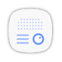

Alapok
Fontos tudnivalók
A készülék túlmelegedése és megoldások
A készülék felforrósodása az akkumulátor töltése közben
Ha a készülék használat közben forrósodik fel
Az eszköz korlátozásai túlmelegedés esetén
A használattal kapcsolatos óvintézkedések
Gombok
A víz- és porállóság megtartása
Az értékesítési doboz tartalma
A készülék elrendezése
Akkumulátor
Az akkumulátor töltése
A fennmaradó töltési idő megtekintése
Az akkumulátor-energiafogyasztás csökkentése
Töltési tippek és elővigyázatossági intézkedések az akkumulátorral kapcsolatban
Gyors töltés
A gyors töltés részletei
A töltés sebességének növelése
Energiatakarékos mód
Maximális energiatakarékos mód
SIM-kártya (nano-SIM-kártya)
A SIM-kártya behelyezése
A kártyák helyes behelyezése
Távolítsa el a SIM-kártyát.
Memóriakártya (microSD-kártya)
Memóriakártya behelyezése
A memóriakártya eltávolítása
A memóriakártya formázása
A készülék újraindítása
Érintés
Hosszú érintés
Húzás
Dupla érintés
Simítás
Széthúzás és csíptetés
A készülék be- és kikapcsolása
Az érintőképernyő vezérlése
Kezdőképernyő
Kezdőképernyő
A Kezdőképernyő opciói
Elemek hozzáadása
Elemek mozgatása
Elemek eltávolítása
Mappák létrehozása
Panelek kezelése
A gyorsopciók használata
Alkalmazások képernyő
Elemek mozgatása
Mappák létrehozása
Elemek átrendezése
Elemek keresése
Állapotjelző ikonok
Az Always ON Display mindig funkció időzítésének beállítása
Értesítések megnyitása, ha a képernyő ki van kapcsolva
Zenelejátszás vezérlése, amikor a képernyő ki van kapcsolva
Lezáró képernyő
Always On Display
Értesítési panel
Az értesítési panel használata
A gyorsbeállítási gombok használata
Kereső
Tartalom vagy közeli készülékek keresése
Keresési kategóriák beállítása
Szövegbevitel
Billentyűzetkiosztás
Beviteli nyelv módosítása
Billentyűzet elrendezésének változtatása
További billentyűzetfunkciók
Másolás és beillesztés
Szótár
Képernyőkép rögzítése
Intelligens felvétel
Egy alkalmazás bezárása
Képernyő rögzítése
Alkalmazások megnyitása
Biztonságos mappa
Bevezető
Biztonságos mappa létrehozása
Biztonságos mappa automatikus zárjának beállítása
Tartalom áthelyezése
Alkalmazások hozzáadása
Alkalmazások eltávolítása a Biztonságos mappából
Fiókok hozzáadása
Biztonságos mappa elrejtése
Biztonságos mappa eltávolítása
Több ablak
Bevezető
Osztott képernyős nézet
További beállítások használata
Ablakméret módosítása
Előugró nézet
Előugró ablakok áthelyezése
Samsung fiók
Bevezető
Samsung fiók regisztrálása
Új Samsung fiók regisztrálása
Meglévő Samsung fiók regisztrálása
Samsung fiók eltávolítása
Adatok másolása korábbi készülékről
Adatátvitel a Smart Switch használatával
Adat átvitele mobilkészülékről
Biztonsági mentések továbbítása számítógépről
Adatátvitel a Samsung-felhő használatával
Készülék- és adatkezelés
A készülék csatlakoztatása számítógéphez
A készülék frissítése
Frissítés vezeték nélkül
Frissítés a Smart Switch használatával
Adatok biztonsági mentése vagy visszaállítása
A Samsung fiók használata
A Google-fiók használata
Gyári adatok visszaállítása
Gyors kapcsolódás
Bevezető
Csatlakozás más eszközökhöz
Tartalom megosztása
Csatlakozás tévékészülékhez
Adatfolyam-tartalom regisztrált TV-n
A vészhelyzet mód kikapcsolása
Megosztási funkciók
Vészhelyzet üzemmód
Alkalmazások
Alkalmazások telepítése és eltávolítása
Galaxy Apps
Alkalmazások telepítése
Play Áruház
Alkalmazások telepítése
Alkalmazások kezelése
Alkalmazások eltávolítása vagy tiltása
Alkalmazások engedélyezése
Alkalmazások jogosultságainak beállítása
Telefon
Bevezető
Hívások kezdeményezése
Gyorshívás használata
Hívás kezdeményezése zárolt képernyőről
Hívások kezdeményezése hívásnaplókból vagy névjegylistákból
Nemzetközi hívás kezdeményezése
Hívások fogadása
Hívás fogadása
Hívás elutasítása
Nem fogadott hívás
Telefonszámok letiltása
Lehetőségek hívás közben
Hanghívás közben
Videohívás közben
Névjegyzék
Bevezető
Névjegyek hozzáadása
Új névjegy létrehozása
Telefonszám hozzáadása a Névjegyekhez a billentyűzetről
Telefonszám hozzáadása a Névjegyekhez a híváslistából
Névjegyek importálása
Névjegyek szinkronizálása webes fiókjaival
Névjegyek keresése
Profil megosztása
Névjegyek megosztása
Üzenetek
Bevezető
Üzenetek küldése
Üzenetek megtekintése
Nem kívánt üzenetek letiltása
Üzenetértesítés beállítása
Emlékeztető beállítása üzenetekhez
Internet
Bevezető
Weboldalak böngészése
Titkos üzemmód használata
A titkos üzemmód bekapcsolása
A biztonsági beállítások módosítása
A titkos üzemmód kikapcsolása
E-mail-fiókok beállítása
E-mail küldése
E-mailek olvasása
E-mail
Fényképező
Bevezető
A fényképezőgép elindítása
Simító mozdulatok használata
Váltás a kamerák között
Fényképezési üzemmódok megtekintése
Szűrőeffektusok megtekintése
Fényképezés alapjai
Fényképek vagy videofelvételek készítése
Fókusz és megvilágítás rögzítése
Fényképezési üzemmódok testreszabása
Automatikus mód
Professzionális
Panoráma
Hyperlapse
Önarckép
Szépségeffektusok alkalmazása
Széles önarckép
HDR (árnyalatgazdag)
Éjszakai
Étel
Módok letöltése
Fényképezőgép-beállítások
Gyorsbeállítások
Fényképezőgép-beállítások
Galéria
Bevezető
Képek és videók megtekintése
Képek megtekintése
Videók megtekintése
Albumok megtekintése
Történetek megtekintése
Történetek létrehozása
Történetek megosztása
Történetek törlése.
Képek és videók szinkronizálása a Samsung-felhővel
Képek és videók törlése
Kép vagy videó törlése
Több kép vagy videó törlése
Képek vagy videók megosztása
Visszajelzés
Javaslatok
Támogatás
Hírek és tippek
Samsung Members
Game Launcher
Bevezető
A Game Launcher használata
Játék eltávolítása a Game Launcher-ből
Játékok energiatakarékos módjának aktiválása
A Game Tools használata
Értesítések letiltása játék közben
Samsung Notes
Bevezető
Jegyzetek létrehozása
Jegyzetek törlése
Naptár
Bevezető
Események létrehozása
Teendők létrehozása
Az események és feladatok szinkronizálása fiókokkal
S Health
Bevezető
Az S Health elindítása
Az S Health használata
További információk
S Voice
Bevezető
Ébresztési parancs használata
Az S Voice használata
Tanácsok a jobb hangfelismeréshez
A nyelv beállítása
Hangrögzítő
Bevezető
Hangfelvételek készítése
A felvételi mód módosítása
Saját fájlok
Óra
Bevezető
JELZÉS
Riasztások beállítása
Riasztások leállítása
Riasztások törlése
VILÁGÓRA
Órák létrehozása
Órák törlése
STOPPERÓRA
IDŐZÍTŐ
Számológép
Rádió
Az FM rádió hallgatása
Rádióállomások keresése
Chrome
Gmail
Térkép
Play Zene
Play-filmek
Drive
YouTube
Fotók
Hangouts
Google
Google alkalmazások
Beállítások
Bevezető
Kapcsolatok
Wi-Fi
Csatlakozás Wi-Fi-hálózathoz
Wi-Fi Direct
Adatok küldése és fogadása
Készülék kapcsolódásának befejezése
Bluetooth
Párosítás más Bluetooth eszközökkel
Adatok küldése és fogadása
Bluetooth-készülékek párosításának megszüntetése
Eszköz láthatósága
Adathasználat
Adathasználat korlátozása
Repülő üzemmód
NFC és fizetés
Az NFC funkció használata
Fizetések lebonyolítása az NFC funkcióval
Adatok küldése
Mobil hotspot és internetmegosztás
Mobil hotspot használata
Mobilhálózatok
Hely
Egyéb kapcsolatbeállítások
Nyomtatás
Nyomtatók beépülő moduljainak hozzáadása
Tartalom nyomtatása
MirrorLink
A készülék csatlakoztatása járműhöz MirrorLink révén
A MirrorLink-kapcsolódás befejezése
Letöltésgyorsító
Hangok és rezgés
Értesítések
Kijelző
Opciók
Kékfényszűrő
Egyszerű üzemmód
Váltás egyszerű üzemmódra
Visszatérés normál üzemmódba
Parancsikonok kezelése
Háttérképek és témák
Speciális funkciók
Opciók
Segélykérő üzenetek küldése
A vészhelyzeti névjegyek hozzáadása
A gyors optimalizálás funkció használata
Akkumulátor
Az akkumulátor kezelése
Tárhely
A memória kezelése
RAM
Eszköz biztonsága
Eszköz karbantartása
Alkalmazások
Zárolt képernyő és védelem
Opciók
Ujjlenyomat-felismerés
Az eredményes ujjlenyomat-felismeréshez
Ujjlenyomatok regisztrálása
Ujjlenyomatok törlése
Samsung fiók jelszavának ellenőrzése
Bejelentkezés fiókokba ujjlenyomat segítségével
Képernyő feloldása ujjlenyomat segítségével
Felhő és fiókok
Bevezető
Samsung Cloud
Felhőhasználat
Szinkronizálási beállítások
Mentés és visszaállítás
Fiókok
Fiókok hozzáadása
Fiókok eltávolítása
Biztonsági mentés
Google
Kisegítő lehetőségek
Általános kezelés
Szoftver frissítése
Felhasználói kézikönyv
Az eszköz névjegye
Függelék
Hibakeresés
Az akkumulátor eltávolítása


 Alkalmazások
Alkalmazások Üzenetek
Üzenetek Google alkalmazások
Google alkalmazások Beállítások
Beállítások Függelék
Függelék